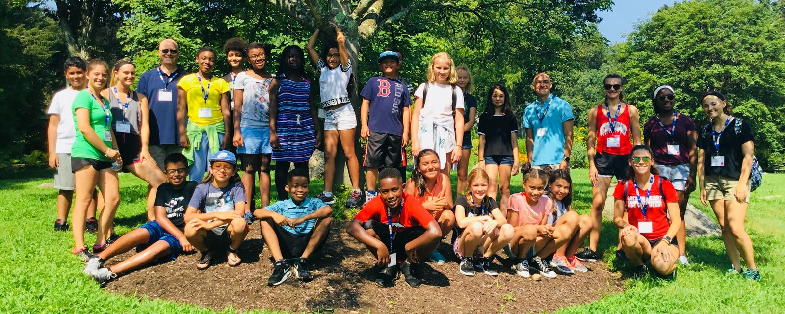

Your gift keeps a student in tutoring.
One on one tutoring for students in lower Fairfield County, funded gift by gift.
Give nowOn the next screen, choose Beyond Limits 2025-2026 from the campaign menu so your gift reaches the program.
Other ways to give
Other ways to support the Foundation
Beyond Limits is one of several funds at Stamford Peace. Each has its own entry in the campaign menu at checkout.
Bill Susetka Memorial Scholarship Fund
Established by the friends and family of Bill Susetka for worthy Stamford Peace student-athletes, reflecting his passion for sports, leadership and mentoring.
Select "Bill Susetka Memorial Scholarship Fund" from the campaign menu.
Kosovo Heritage Basketball Academy
To educate, empower, and inspire young people in Kosovo using the game of basketball as a tool to develop their love for the game, their skills and talents, and their opportunities for a brighter future.
Select "2026 Kosovo Heritage Basketball Academy" from the campaign menu.
Further Beyond Limits campaigns
The campaign menu also carries the End of School Year Campaign, Sponsorships 25-26, and the Hart Elementary Collaboration.
Stamford Peace shop
PEACE t-shirts, hoodies and more. A portion of sale benefits Stamford Peace.
Curious about the program first? Tell us about your student.
Our onboarding assistant can point you to tutoring, sponsorship, or whatever comes next, in English or Español.